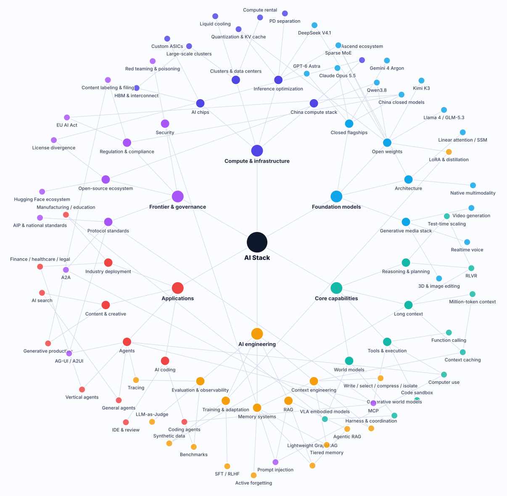

Models change. Layers don't. What breaks every week is the seam between two of them.
This isn't a "what happened in AI this year" roundup. It's simpler than that: I want to split the AI stack into six layers, talk about where each one breaks first in production, and what we can actually hold onto at each layer. The structural judgments don't depend on any market data; every standard and regulation cited was checked against the source, with links at the bottom.
1. Why bother drawing another map
Back in 2023, talking about AI mostly meant talking about models: whose parameter count was bigger, who topped the leaderboard, whose context window was longer. By 2026 that framing has started to wear thin.
Value has moved to both ends — toward compute and inference cost on one side, toward getting agents into production on the other. The model layer in the middle still matters, but it increasingly behaves like a replaceable dependency: a database, a message queue, a CDN.
And every replaceable dependency ends up on an ops workbench in exactly the same way — versions, capacity, quotas, canaries, rollbacks. For a lot of teams this year, the most important architecture decision wasn't "which model," it was "how do we keep the ability to switch."
So this map isn't about being exhaustive. Exhaustive is impossible; it's stale in six months.
What it's actually good for is marking the seams — the interfaces between layers, which is where incidents actually happen.

2. Six layers, one table
Let's put the skeleton up first. Reading left to right, the table says three things: what the layer owns, how it most typically fails, and what you can hold onto there.
| Layer | What it owns | How it typically fails | What you can hold onto |
|---|---|---|---|
| Infrastructure | Chips, clusters, power, network, inference optimization | Utilization never gets where it should; at scale, hardware failure is the steady state | Capacity and quotas, utilization, self-healing, checkpoints |
| Models | Weights, versions, inference serving, routing | Silent version drift — production isn't what you evaluated | Version pinning, canaries, routing and rollback |
| Capabilities | Reasoning and planning, tool calls, context, code sandboxes | The capability "exists" in the docs but won't survive production | Timeouts, budgets, degradation paths, capability probes |
| Engineering | Orchestration, memory, retrieval, evaluation, observability | It works, but nobody can say why — or why it stopped | Trace replay, eval sets, cost attribution |
| Applications | User-facing flows and interfaces | Over-broad permissions, wrong clicks, blast radius | Sandboxes, least privilege, human approval |
| Standards & governance | Protocols, compliance, security | Three months after launch, you find out you're non-compliant | Audit trails, content labeling, red teaming |
If I had to keep one line from this, it'd be this one:
Lower layers set the ceiling, upper layers shape the experience, seams cause the incidents.
A bit of a slogan, but it works. Read it out loud during an architecture review and it'll surface a few questions you'd otherwise skip.
3. Three structural shifts in 2026
This section is about structure only, no figures. Figures go stale; structure doesn't.
1. Training is a one-time bill, inference is a daily one
Training spend happens once. Inference spend keeps going. Once volume picks up, what you're optimizing changes:
- From "how do we train the thing" to "how do we make each call a little cheaper";
- Quantization, KV cache reuse, prefill/decode disaggregation (PD separation) — these used to be cost tricks, now they're architecture decisions;
- Cost moves from a finance line item to an ops metric — latency, throughput, and dollars per thousand tokens, ideally on the same dashboard.
For ops people this is pretty direct: what you watch expands from "is the service up" to "was this call worth it." Follow that thread and you end up in cost attribution, and a bit further down, in the "no errors, but expensive" cases we wrote about in Catching Silent Failures.
2. The standard is still moving, so anything you hardcode today is debt
The biggest engineering risk in AI observability these past two years isn't the absence of a standard. It's that the standard is moving.
OpenTelemetry's GenAI semantic conventions were split out of the main repo into their own repository in May 2026[1], and as of October they're still changing fast — even the schema URL is still marked as undecided. Which means:
A field name you hardcode today is tomorrow's legacy debt.
So our rule is: semantics follow the standard, implementations stay swappable.
Build the trace semantic model — what one inference, one tool call, one agent invocation should look like — on top of the OpenTelemetry conventions, and treat every vendor SDK and every platform as a replaceable adapter. Do it the other way round, let one platform's private fields become the single source of truth, and the day you switch platforms you rewrite all your instrumentation.
It's the same line we keep repeating in Understanding an Agent Trace: agree on semantics first, pick tools second.
3. MCP moved "what an agent can do" into the protocol
MCP's role in 2026 is no longer just "wire tools up to a model."
The 2026-07-28 spec still has the core resources / prompts / tools, but it also ships several extensions[2]:
- Tasks — asynchronous long-running work, with polling, mid-flight input, and durable handles;
- Skills over MCP — structured operating instructions distributed over the protocol instead of stuffed into a system prompt;
- MCP Apps — interactive UI rendered inline in the conversation.
Together, that moves "what the agent is allowed to do" out of the prompt and into the protocol. And once it's in the protocol, the ops surface changes:
The MCP gateway becomes the new API gateway. Auth, rate limits, quotas, and audit belong there — not written five times across five agents.
That's good news: agent access governance finally has a place where it can be standardized and operated centrally. It's also annoying news: you've gained another middleware you have to run yourself.
4. Layer by layer: what breaks first
Six short sections. Each answers one question: in production, what breaks first in this layer.
1. Infrastructure: the expensive part isn't the chips, it's the power and the fabric
Once you're at the tens-of-thousands-of-accelerators scale, the binding constraints change. Chip supply is one of them, but the harder ones are usually power, cooling, interconnect bandwidth, and effective utilization.
Two engineering consequences:
- Hardware failure becomes normal. At scale, "something is broken" is the steady state. Checkpointing, elastic training, and self-healing aren't nice-to-haves, they're the entry ticket.
- Utilization becomes the headline metric. An idle card and a dead card are the same thing on the balance sheet. Liquid cooling, network topology, and scheduling policy all collapse into that one number.
Most teams won't build this layer themselves, but you still have to be able to do the math: where rental prices are heading, how to split reserved versus on-demand, which pool a training job should land in.
2. Models: the least reliable piece of information is the model name
I'm deliberately not naming any specific models in this post.
The reason is practical: model names have a very short shelf life. A model can go from launch to being superseded in a few months, and an article with hardcoded model names becomes evidence that "this person doesn't really know" half a year later. Worse, get one name wrong and readers stop trusting the whole piece.
What you actually need for ops is a capability tier, not a model name:
| Tier | Used for | Key constraint |
|---|---|---|
| Heavy reasoning | Complex planning, multi-step tasks, code refactoring | High unit cost, long latency — always cap the budget |
| Fast response | Classification, extraction, routing, the main conversation loop | Stability first; some capability loss is acceptable |
| Low cost | Batch jobs, offline summarization, data cleanup | Throughput first; queueing is fine |
| Self-hosted | Anything where data can't leave the boundary | Trading capability for compliance; accept the gap |
Route by tier and the model becomes swappable at any time. Then do three things: pin versions, canary, roll back.
Model upgrades should go through the same pipeline as code releases — review, canary percentage, one-click rollback. Not "an engineer edits an environment variable," followed by discovering the next morning that the tone of every answer changed and nobody knows which change did it.
3. Capabilities: capability isn't the same as usable
"Supports tool calling" and "reliably calls tools inside your product" are two different things. The first is a checkbox in the docs; the second has to be built:
- Timeouts and retries — tools are slow, they fail, they return garbage. An agent without timeouts is a process that hangs forever;
- Idempotency — retries assume the callee can take duplicates. Especially for writes;
- Budget gates — a token and cost ceiling per run. Without one, a single loop can burn the quarter's budget;
- Degradation paths — what happens when the strong model is unavailable, and what happens when the tool is.
Long context works the same way: fitting it in doesn't mean getting value out of it. At million-token scale, the price and latency curves usually make "just stuff it all in" the most expensive option available. Compress when you should, retrieve when you should — that's the "write, select, compress, isolate" pattern from the first post in the observability series.
4. Engineering: can you replay that run or not
This layer is the blog's main thread, so I won't expand it here. One test is enough:
When something goes wrong, can you play that run back exactly as it happened?
If yes, you have at minimum: a complete trace, inputs and outputs per step, tool arguments and returns, token counts and latency, and the model version. If no, you have a pile of logs and one sentence — "the user says it's wrong."
While we're here: evaluation. A lot of people treat evals as a pre-launch gate. The bigger value is in production — running LLM-as-a-Judge against real traffic gives you a time series for quality, instead of only having one for error rate. That post goes deeper.
5. Applications: coding agents got there first because the output is checkable
Why was programming the first domain to scale?
Not because models are best at writing code, but because code compiles, code runs tests, code gets reviewed. The feedback loop is the shortest one available, verification is cheap, and mistakes surface immediately.
For every other industry that's a fairly blunt hint: if you want agents to land, first make "right" and "wrong" decidable. If even humans can't agree on what correct means, no one will let an agent do the work.
What you can hold onto in this layer is concrete: a code sandbox (mandatory, not optional), least privilege (if read is enough, don't grant write), and human approval before changes land.
6. Standards & governance: compliance lands in the data pipeline, not in legal
Two dates first:
- EU AI Act — the bulk of the Act became applicable on 2026-08-02, which has already passed; 2026-12-02 is the compliance date tied to labeling synthetic content (Article 50(2))[3].
- China — the Measures for Labeling AI-Generated Synthetic Content took effect on 2025-09-01, requiring both explicit and implicit labels, with a matching mandatory national standard[4].
Both look like legal's problem. They aren't. They both land on a very engineering question:
Do you have the record?
Concretely, that means these fields have to be in the trace: who triggered it, when, which model and which version, which tools ran, whether the content was generated, and whether a human edited it. If those fields aren't in the collection path, you can't reconstruct them later — you will not be able to rebuild a specific call three months after the fact.
Security is the same shape. Prompt injection has long topped the LLM application risk list[5], and it's fundamentally "untrusted input entering a trusted context." The engineering answer isn't keyword filtering — it's least privilege plus a human in the loop, so that an injected agent still can't do anything dangerous.
5. Three things you can use tomorrow
None of these are new. We wrote them down because we learned them the hard way.
1. Add a seam checklist to architecture reviews
There are five key seams between the six layers. At each one, ask three questions: who defined the interface? who gets told when it changes? who catches it when it breaks?
| Seam | Typical interface | What usually goes wrong on change |
|---|---|---|
| Infra ↔ models | Inference serving API | Concurrency spikes, VRAM saturates, queues collapse |
| Models ↔ capabilities | Context window, tool schema | Tool call format changes with the model; silent failure |
| Capabilities ↔ engineering | Trace semantics | Switching SDKs drops fields; historical data no longer joins |
| Engineering ↔ applications | State and checkpoints | Long task interrupted, unrecoverable, has to restart from zero |
| Applications ↔ governance | Audit logs | Can't prove what happened, or who changed it |
You don't have to fill the whole table. Fill what you can; whatever's left blank is a risk. Far more useful than a meeting about "our AI strategy."
2. Observability before features
Not "ship first, instrument later," but: if a feature can't be replayed, it isn't finished.
This is harder in agents than in microservices. Microservice failures are usually loud — error rates climb, latency spikes, alerts fire. Agent failures are often quiet: the answer reads smoothly but is wrong; the task "completed" but the result is off. The three pillars post is about turning that quiet into something visible.
3. Treat the model as a replaceable dependency
Three pieces, all required:
- A routing layer — call by capability tier; business code never names a model;
- An eval set — run it before switching models, and let the data decide instead of your gut;
- A rollback switch — one config flips back to the previous version, effective in minutes.
With those three in place, "switching models" goes from a project with a kickoff meeting to a routine change.
6. Closing: watch the seams
Models change. Layers don't.
By 2026 the six-layer skeleton is settled. What's still moving is how each layer is implemented internally, and where the interfaces between them sit.
For ops people that's actually good news: you don't have to chase every new model. Watching the seams is enough — is the interface defined, does a change get announced, does a break get caught.
A few honest notes on the limits of this piece. The six-layer structure and "what breaks first in each layer" are engineering judgments, not market data. Every standard and regulation cited was checked against the source, with links below. I deliberately left out model names, version numbers, and prices — they go stale, and getting them wrong is expensive. The nodes in the map will keep changing; the structure of this article won't, and if the two ever disagree, trust the article.
Anyway, I don't claim this map is fully right, and in six months a good chunk of it will probably need revising. If you spot a layer that's already off, tell me and we'll fix it together.